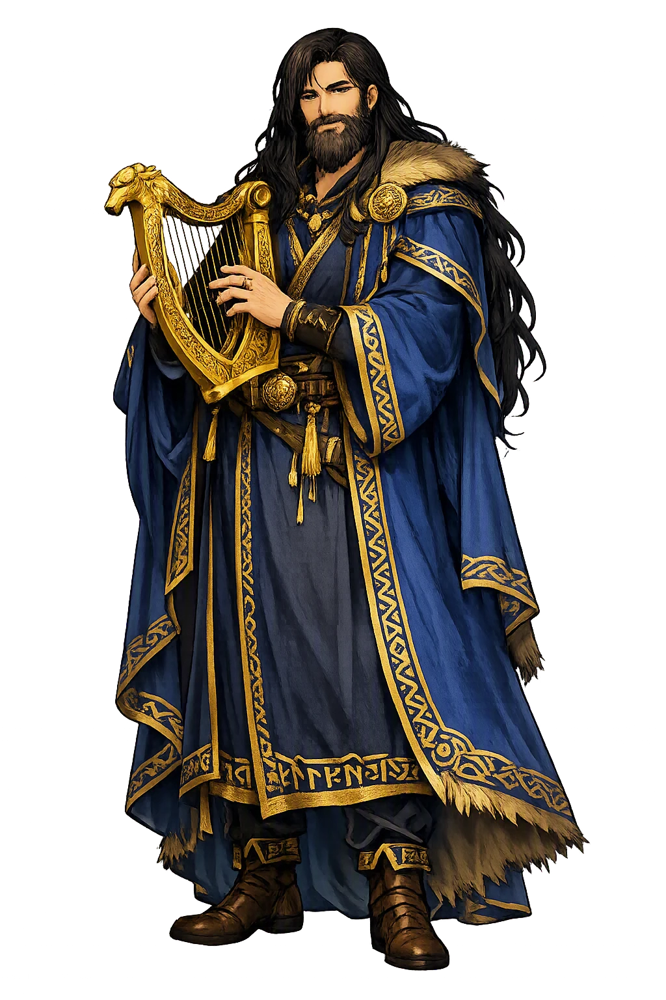
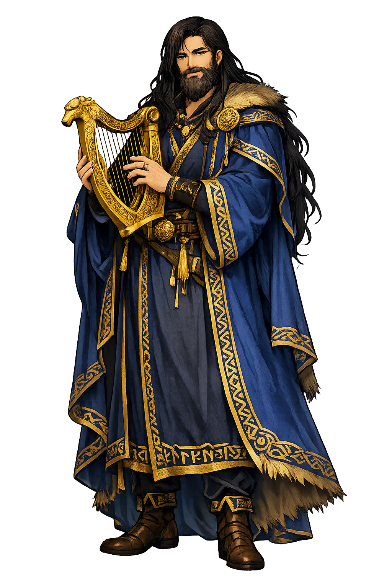

Unicode restoration and ASCII comparison
ᛒᚱᛅᚴᛁ
The name in its original Norse form. Bragi (ᛒᚱᛅᚴᛁ) is attested in the source tradition — “Poet, first”. Its original diacritics and script distinctions carry the full phonetic and orthographic weight of the source tradition.
bragi
The plain bragi form is identical to the Unicode restoration. Because this name is already written in Latin letters, no diacritics, stress, or script information were lost — only capitalization differs.
Bragi
The Unicode restoration does not need to recover lost marks for Bragi. Its value is canonical spelling and consistent cataloguing, not the reconstruction of erased orthography. The domain is readable as-is to both DNS and humanity.
Bragi.com → bragi.com
The non-ASCII characters in Bragi are encoded while the ASCII remains visible. To the DNS, it is Punycode. To humanity, it is Bragi.
How Bragi travels from ancient script to the modern URL
Owned, ideal, and ASCII forms of Bragi
Bragi
Restores ᛒᚱᛅᚴᛁ. The full Unicode restoration. bragi.com is not in the PuniCodex collection — it is watched for release; if it drops, this temple upgrades to an owned flagship.
How Bragi was spoken
The Skald Among the Gods
Bragi is the god the North made out of its own craft: the god of poetry and of the well-turned word, husband of Iðunn, the voice Snorri seats at the centre of every divine feast — the skald who narrates the myths to Ægir in the Prose Edda's own frame, and the god Óðinn sends out to greet dead kings at the door of Valhǫll.
The blood-and-honey mead brewed from wise Kvasir, hoarded by Suttungr and stolen by Óðinn — the myth of poetry's origin that Bragi himself narrates in Skáldskaparmál.
The 'foremost cup' drained with binding vows at the great feasts — the toast that kept the god's word for 'foremost' at the drinking-table long after conversion.
Skegg-Bragi: Skáldskaparmál's kenning calls him the long-bearded god — the beard as the old skald's visible mark of office.
The voice at Valhǫll's door: in Hákonarmál Óðinn sends Bragi and Hermóðr out to greet the dead king Hákon the Good as he comes to the hall.
Stories of Bragi
Bragi acts in almost nothing and speaks in everything. His dossier is a voice: the catalogue portrait in Gylfaginning, the storytelling frame of Skáldskaparmál, the first sharp answer to Loki in Lokasenna, and the welcome spoken over dead kings in the court poems. The tradition made the god of poetry out of the thing poetry does.
Snorri's catalogue of the Æsir fixes the portrait the whole tradition repeats: one of the gods is called Bragi; he is renowned for wisdom and most of all for eloquence and skill with words, and he knows more about poetry than any other. From his name, Snorri says, bragr is called — the word means both poetry and the foremost of anything — and from it a man or woman who surpasses others in eloquence is called a bragr-maðr or bragr-kona. His wife is Iðunn. Grímnismál's litany of the world's best things seals the verdict in verse: Bragi is best of skalds, as Sleipnir is best of horses and Bifrǫst of bridges.
The Prose Edda's second half is built around Bragi's voice. When Ægir, the sea-god skilled in magic, came to a feast in Ásgarðr, he was seated beside Bragi, and they drank and talked — and the myths Bragi tells him are the ones the book exists to record: how the Æsir and Vanir spat their truce into a vat and made Kvasir, wisest of beings; how the dwarfs Fjalarr and Galarr killed him and brewed his blood with honey into the mead that makes a skald of whoever drinks; how the mead passed to the giant Suttungr and how Óðinn, as Bǫlverkr, lay three nights with Gunnlǫð and drained Óðrerir in three gulps. Bragi also tells Ægir how the giant Þjazi took the shape of an eagle and carried off his own wife Iðunn and her apples of youth, and how Loki won her back. When Skáldskaparmál later asks how Bragi himself shall be kennt, the answer is the god's whole identity in one line: husband of Iðunn, first maker of poetry, the long-bearded god, and son of Óðinn.
When Loki forced his way into Ægir's feast uninvited and demanded a place at the drinking, Bragi was the first of the Æsir to refuse him: the gods, he said, know whom they will have at their high feast, and Loki is not one. Loki invoked Óðinn's old oath of blood-brotherhood and won his seat — and then began the flyting the poem is named for. To Bragi he threw the insult that stings a skald most: that the god of the word was the most cowardly of the Æsir in war, shyest of the bow-shot when fighting came. Bragi answered that if they stood outside the hall he would carry Loki's head in his hand — and then it was Iðunn, his wife, who did the true eloquent work of the scene, begging Bragi not to bandy words with Loki in Ægir's hall and calming the quarrel before it ran further. The poem keeps Bragi exactly where the tradition always keeps him: at the bench, in the war of words.
The court poets gave Bragi his most solemn office. In Eyvindr skáldaspillir's Hákonarmál, composed for the funeral of King Hákon the Good around 961, Óðinn looks out as the slain king approaches Valhǫll with his host and speaks the order the North remembered: 'Hermóðr and Bragi, go to meet the king — a king who seems mighty is coming to the hall.' In the anonymous Eiríksmál, woven for Eiríkr Bloodaxe, it is Bragi who speaks with Óðinn inside the hall: he asks why the Allfather robbed Eiríkr of victory when the king seemed to him the bravest, and Óðinn answers with the sentence that explains all such losses — the grey wolf gapes ever at the dwellings of the gods. The god of poetry is the one who must ask why the brave die, and the one sent out to welcome them home.
History keeps a second Bragi, and the two have never been fully separated. Bragi Boddason the Old, a Norwegian skald of the ninth century, is the earliest skald whose name and verse both survive: his Ragnarsdrápa, a shield-poem of painted myths, is quoted stanza by stanza in Skáldskaparmál, and Skáldatal counts him among the skalds of Ragnarr loðbrók. Since the nineteenth century scholars have asked whether the god is the deified poet — a great court skald promoted after death into the pantheon he served — and the handbooks register the theory without settling it. Simek notes the other, colder possibility: that the divine Bragi may be a late literary personification of bragr, poetry itself, with no old cult behind him at all. Between the poet made god and the god made out of a noun, the sources leave the question honestly open.
Bragi is the god a culture of oral memory had to invent. In a world without archives, the skald was the archive: the king's deeds, the clan's honour, the boundary between being remembered and being nothing all ran through one trained voice at the feast. The North looked at that voice and saw a god in it — and then, characteristically, put the god to work at the door of the dead, because the only immortality the Edda truly promises is the welcome spoken over you when you arrive. Óðinn wins the mead; Bragi pours it. That division of labour is the deepest thing the tradition says about poetry: inspiration is theft and ordeal, but eloquence is hospitality — the craft of receiving greatness and giving it words. The god whose name means 'foremost' is the one who stands where the living greet the dead and finds the sentence both can bear.
Enter Extended Lore